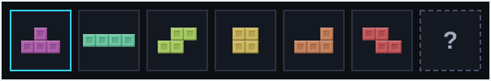
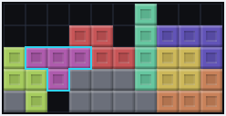
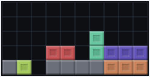
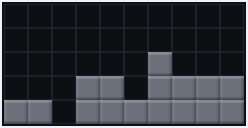
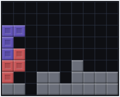
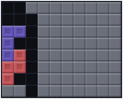

How openers work
Tetr.io uses the 7-Bag randomizer, meaning the game shuffles all seven pieces, deals them out, and repeats. Every bag contains each piece once, so the first seven pieces of a game are a known set. Only the order is unknown.
A good opener often allows you to get an attack in while your opponent is still trying to stack to their first quad.

Try this
At the start of every round, work out which piece is the unseen seventh before you place anything. Being able to understand the bag and queue are essential to knowing which opening to use, and will help when your pacing is eventually faster.
Choosing an opener
You aren't able to force an opener every round, since the opening bag constantly changes. Picking an opener depends on which pieces come early. Two openers, TKI and DT Cannon, cover most bags. With extra options for awkward bags.
| Early piece | Opener | What it goes for |
|---|---|---|
| I | TKI | A TSD straight from the first bag |
| J or L | DT Cannon | A TSD, then a back-to-back TST |
| J or L | MKO | A perfect clear or TSDs |
| S, Z or T | PCO | A perfect clear |
| S, Z or T | C-Spin | A TST, then a TSD or TST |
| O, S or Z | Hachispin | A TSS, then a TST, then a perfect clear |
Which one to learn first?
Consider learning TKI and DT Cannon first, as they both adopt wide ranges for follow ups and stacking methods afterwards.
For exact piece placements, check out four.lol pages for TKI, DT Cannon, MKO, PCO, C-Spin, and Hachispin.
Follow ups
The initial opener usually ends with the first bag, but most of the time the game continues on. Considering follow ups after your opening is just as important as mastering an opening you really like.
- TKI finishes off with a flat board, making it easy to stack for a quad, or a TSD, or LST stacking
- DT Cannon is only half built after the first bag, meaning the whole attack finishes after the second bag. Leaving the board with a higher stack.
- C-Spin leaves a clean board like TKI, after the opening there are a number of follow ups and stacking methods that can scale in strength as your stacking and vision improves.
- MKO branches into a PC or can be followed up with more TSDs.
- PCO either finishes with a clear board, or follow up options if a Perfect Clear isn't executed anyway.
Example: TKI into Double TST
The Double TST is a TKI follow up for when LST stacking isn't possible with your queue, which is common when the third bag starts with a Z and a J. It's a risky option but extremely strong.





Wrapping Up
Relying on your opener too heavily will hinder your development as a player, your opening is important but the win will almost always come from your midgame and counter-attacks. Focus on learning a couple of openings and the continuations afterwards.
Once the opener is spent, you're back to stacking and sending lines. See more about sending lines in the next guide.